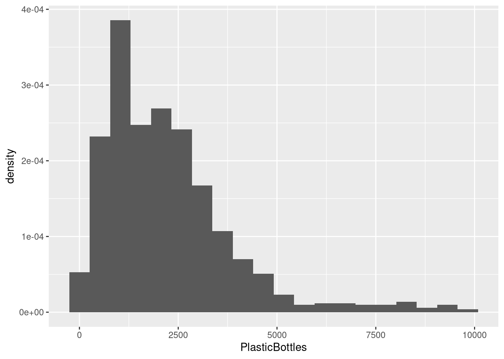

# This code will load the R packages we will use
install.packages(c("csucistats"),
repos = c("https://inqs909.r-universe.dev", "https://cloud.r-project.org"))
library(csucistats)
library(tidyverse)
# Uncomment and run for categorical plots
# csucistats::install_plots()
# library(ggtricks)
# library(ggmosaic)
# library(waffle)
# Uncomment and run for themes
# csucistats::install_themes()
# library(ThemePark)
# library(ggthemes)Numerical Data
Descriptive stats & visualizations for quantitative variables (mean/median, spread, hist/box/scatter)
1 Introduction
- Identify numerical (quantitative) variables and read their distributions.
- Compute core descriptive statistics: min, Q1, median (Q2), mean, Q3, max, IQR, variance, sd.
- Make and interpret histograms, box plots, dot plots, and scatter plots.
- Recognize outliers and what they may indicate.
- Use copy‑paste templates and replace placeholders with your data/columns.
Tip
Use the Copy button on each code chunk. Most topics have a template first and a worked example using the Mr. Trash Wheel dataset.
2 Google Colab Setup
Copy the following code and put it in a code cell in Google Colab. Only do this if you are using a completely new notebook.
2.1 Data for this handout
We will use the Mr. Trash Wheel dataset from TidyTuesday.
Code
trashwheel <- read_csv(
"https://raw.githubusercontent.com/rfordatascience/tidytuesday/master/data/2024/2024-03-05/trashwheel.csv")2.2 Using the templates: what to change
Use this legend whenever you see a Template code block.
DATA→ replace with your data frame/tibble name (e.g.,trashwheel).VAR→ replace with the single numerical variable you want (e.g.,PlasticBottles).In
ggplot(DATA, aes(x = VAR)), writeggplot(trashwheel, aes(x = PlasticBottles)).In functions that take a vector (e.g.,
mean(DATA$VAR)), writemean(trashwheel$PlasticBottles).
VAR1andVAR2→ replace with the x and y variables for scatter plots (e.g.,PlasticBottles,PlasticBags).bins = X,binwidth = X→ choose a sensible number/width for your data scale.
2.2.1 Quick replace checklist
Swap
DATAfor your data frame (usuallytrashwheel).Swap
VARfor your numerical column (e.g.,PlasticBottles).For scatter plots, set
VAR1andVAR2.Adjust
binsorbinwidthfor histograms/dot plots to show the distribution clearly.
3 Summary (descriptive) statistics
3.1 What is numerical data?
Numerical (quantitative) variables record numbers for which arithmetic makes sense (e.g., items collected, weights, costs).
Example (first few values):
head(trashwheel$PlasticBottles)#> [1] 1450 1120 2450 2380 980 14303.2 Central tendency
Central tendency summarizes a distribution with a representative value (mean or median).
Median (Q2) is the 50th percentile: half the data lie below it.
Mean is the arithmetic average: sensitive to outliers/skew.
3.3 Variation (spread)
Variation describes how far data tend to fall from the center.
Range = max − min
IQR = Q3 − Q1 (middle 50%)
Variance/SD measure average squared/root‑mean‑squared distance from the mean.
3.4 Summary Statistics
Template:
num_stats(DATA$VAR) # five-number summary + meanExample:
num_stats(trashwheel$PlasticBottles)#> min q25 mean median q75 max sd var iqr missing
#> 1 0 987.5 2219.331 1900 2900 9830 1650.449 2723984 1912.5 1Alternative:
summary(DATA$VAR) # five-number summary + mean3.5 Mean, median, variance, sd
Template:
mean(DATA$VAR)
median(DATA$VAR)
var(DATA$VAR)
sd(DATA$VAR)With Missing Data:
mean(DATA$VAR, na.rm = TRUE)
median(DATA$VAR, na.rm = TRUE)
var(DATA$VAR, na.rm = TRUE)
sd(DATA$VAR, na.rm = TRUE)Example:
mean(trashwheel$PlasticBottles, na.rm = TRUE)#> [1] 2219.331median(trashwheel$PlasticBottles, na.rm = TRUE)#> [1] 1900var(trashwheel$PlasticBottles, na.rm = TRUE)#> [1] 2723984sd(trashwheel$PlasticBottles, na.rm = TRUE)#> [1] 1650.4493.6 Quantiles
Template:
quantile(DATA$VAR, probs = c(0.25, 0.5, 0.75))Example:
quantile(trashwheel$PlasticBottles,
probs = c(0.25, 0.5, 0.75),
na.rm = TRUE)#> 25% 50% 75%
#> 987.5 1900.0 2900.04 Data visualization
4.1 Histograms
A histogram shows the distribution by binning values and counting how many fall in each bin.
Template (Frequency-based):
ggplot(DATA, aes(x = VAR)) +
geom_histogram(bins = X) Example:
ggplot(trashwheel, aes(x = PlasticBottles)) +
geom_histogram(bins = 20)#> Warning: Removed 1 row containing non-finite outside the scale range
#> (`stat_bin()`).
Template (Density-based):
ggplot(DATA, aes(x = VAR, y = after_stat(density))) +
geom_histogram(bins = X)Example:
ggplot(trashwheel, aes(x = PlasticBottles, y = after_stat(density))) +
geom_histogram(bins = 20)#> Warning: Removed 1 row containing non-finite outside the scale range
#> (`stat_bin()`).
4.2 Density plot
A density plot is a way to visualize the distribution of a continuous variable — it shows where data values are concentrated (dense) and where they are sparse.
Template:
ggplot(DATA, aes(x = VAR)) +
geom_density()Example:
ggplot(trashwheel, aes(x = PlasticBottles)) +
geom_density()#> Warning: Removed 1 row containing non-finite outside the scale range
#> (`stat_density()`).4.3 Box plots
A box plot summarizes median, quartiles, and potential outliers.
Template:
ggplot(DATA, aes(VAR)) +
geom_boxplot()Example:
ggplot(trashwheel, aes(PlasticBottles)) +
geom_boxplot() #> Warning: Removed 1 row containing non-finite outside the scale range
#> (`stat_boxplot()`).
4.4 Dot plots
A dot plot stacks dots within bins to show distribution.
Template:
ggplot(DATA, aes(x = VAR)) +
geom_dotplot(binwidth = X) # choose a sensible binwidthExample:
ggplot(trashwheel, aes(x = PlasticBottles)) +
geom_dotplot(binwidth = 100)#> Warning: Removed 1 row containing missing values or values outside the scale range
#> (`stat_bindot()`).4.5 Scatter plots (two numerical variables)
A scatter plot reveals association, trend direction, and form.
Template:
ggplot(DATA, aes(x = VAR1, y = VAR2)) +
geom_point()Example:
ggplot(trashwheel, aes(x = PlasticBottles, y = PlasticBags)) +
geom_point()#> Warning: Removed 1 row containing missing values or values outside the scale range
#> (`geom_point()`).
Add a trend line (optional):
ggplot(trashwheel, aes(x = PlasticBottles, y = PlasticBags)) +
geom_point() +
geom_smooth(method = "lm", se = TRUE)#> `geom_smooth()` using formula = 'y ~ x'#> Warning: Removed 1 row containing non-finite outside the scale range
#> (`stat_smooth()`).#> Warning: Removed 1 row containing missing values or values outside the scale range
#> (`geom_point()`).
5 Quick troubleshooting
Lots of NAs? Add
na.rm = TRUEwhere available or filter rows withdrop_na(VAR).Histogram looks too blocky/smooth? Tune
binsorbinwidth.Weird axis or units? Check for unit conversions or outliers dominating the scale.
Outliers change the mean a lot. Consider reporting median or using robust summaries.
6 Appendix: minimal templates (copy‑paste)
Each template below has placeholders in ALL CAPS (e.g., DATA, VAR, VAR1, VAR2). Replace them with your dataset name and variable names.
6.1 Basic Statistics
# Mean / Median / Var / SD
mean(DATA$VAR)
median(DATA$VAR)
var(DATA$VAR)
sd(DATA$VAR)DATA→ the name of your dataset (e.g.,trashwheel).VAR→ a single categorical variable (e.g.,PlasticBottles).
# Quantiles
quantile(DATA$VAR, probs = c(0.25, 0.5, 0.75))DATA→ the name of your dataset (e.g.,trashwheel).VAR→ a single categorical variable (e.g.,PlasticBottles).
6.2 Summary Statistics (csucistats)
num_stats(DATA$VAR)DATA→ the name of your dataset (e.g.,trashwheel).VAR→ a single categorical variable (e.g.,PlasticBottles).
6.3 Histogram (Frequency-based)
ggplot(DATA, aes(VAR)) +
geom_histogram()DATA→ the name of your dataset (e.g.,trashwheel).VAR→ a single categorical variable (e.g.,PlasticBottles).
6.4 Histogram (density-based)
ggplot(DATA, aes(x = VAR, y = after_stat(density))) +
geom_histogram()DATA→ the name of your dataset (e.g.,trashwheel).VAR→ a single categorical variable (e.g.,PlasticBottles).
6.5 Histogram (Frequency-based) with bins
ggplot(DATA, aes(VAR)) +
geom_histogram(bins = X)DATA→ the name of your dataset (e.g.,trashwheel).VAR→ a single categorical variable (e.g.,PlasticBottles).X→ the number of bins (e.g., 15-30)
6.6 Histogram (Density-based) with bins
ggplot(DATA, aes(x = VAR, y = after_stat(density))) +
geom_histogram(bins = X)DATA→ the name of your dataset (e.g.,trashwheel).VAR→ a single categorical variable (e.g.,PlasticBottles).X→ the number of bins (e.g., 15-30)
6.7 Density Plot
ggplot(DATA, aes(VAR)) +
geom_density()DATA→ the name of your dataset (e.g.,trashwheel).VAR→ a single categorical variable (e.g.,PlasticBottles).
6.8 Box plot
ggplot(DATA, aes(VAR)) +
geom_boxplot() DATA→ the name of your dataset (e.g.,trashwheel).VAR→ a single categorical variable (e.g.,PlasticBottles).
6.9 Dot plot
ggplot(DATA, aes(x = VAR)) +
geom_dotplot(binwidth = X)DATA→ the name of your dataset (e.g.,trashwheel).VAR→ a single categorical variable (e.g.,PlasticBottles).
6.10 Scatter Plot
ggplot(DATA, aes(x = VAR1, y = VAR2)) +
geom_point()DATA→ the name of your dataset (e.g.,trashwheel).VAR1→ a single categorical variable (e.g.,PlasticBottles).VAR2→ a single categorical variable (e.g.,PlasticBags).
6.11 Scatter Plot + trend line
ggplot(DATA, aes(x = VAR1, y = VAR2)) +
geom_point() +
geom_smooth(method = "lm", se = TRUE)DATA→ the name of your dataset (e.g.,trashwheel).VAR1→ a single categorical variable (e.g.,PlasticBottles).VAR2→ a single categorical variable (e.g.,PlasticBags).